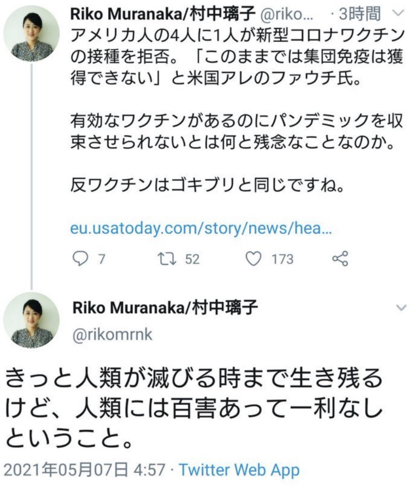

村中璃子氏 「反ワクチンはゴキブリ」
こういう専門家の言動がワクチン医療への信頼を低下させているのでは？
Riko Muranaka/村中璃子@rikomrnk·2021年6月10日 ワクチン「で」死んだのではなくワクチンの「接種後に亡くなった」人の数ですよね。 コロナでなくても一定数の人が毎日亡くなっています。特に高齢者中心に接種していればそれなりの数が接種後に亡くなるでしょう。 まったく心配のいらない死亡者数で安心しました。
アメリカ人の4人に1人が新型コロナワクチンの接種を拒否。「このままでは集団免疫は獲得できない」と米国アレのファウチ氏。有効なワクチンがあるのにパンデミックを収束させられないとは何と残念なことなのか。 反ワクチンはゴキブリと同じですね。 きっと人類が滅びる時まで生き残るけど、人類には百害あって一利なしということ。https://twitter.com/rikomrnk/status/1390395258345861120?s=20
